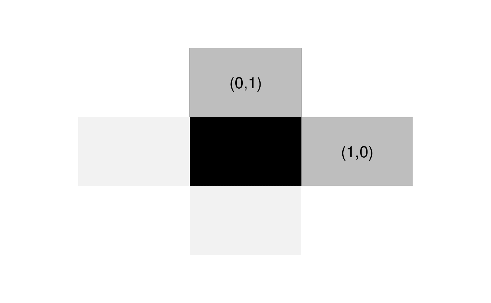
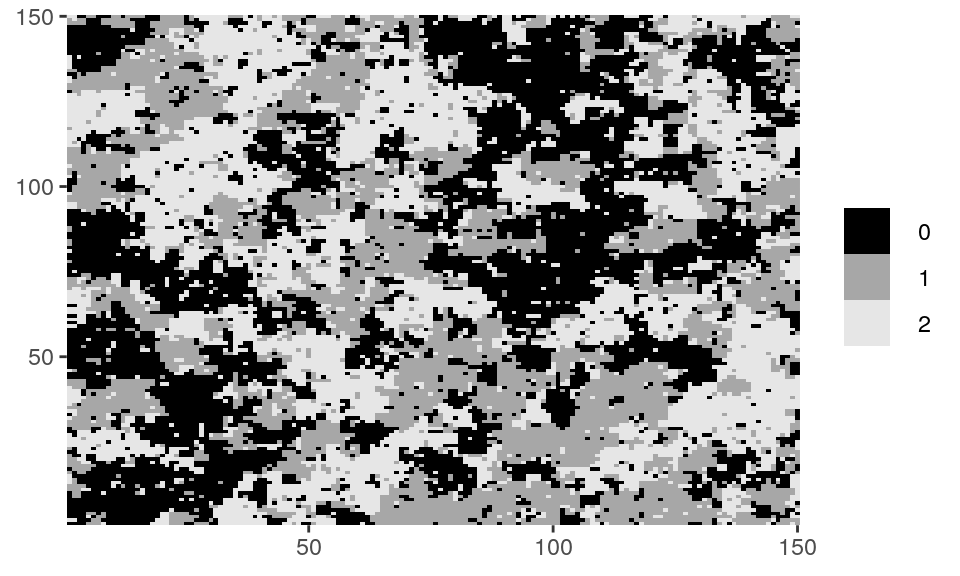
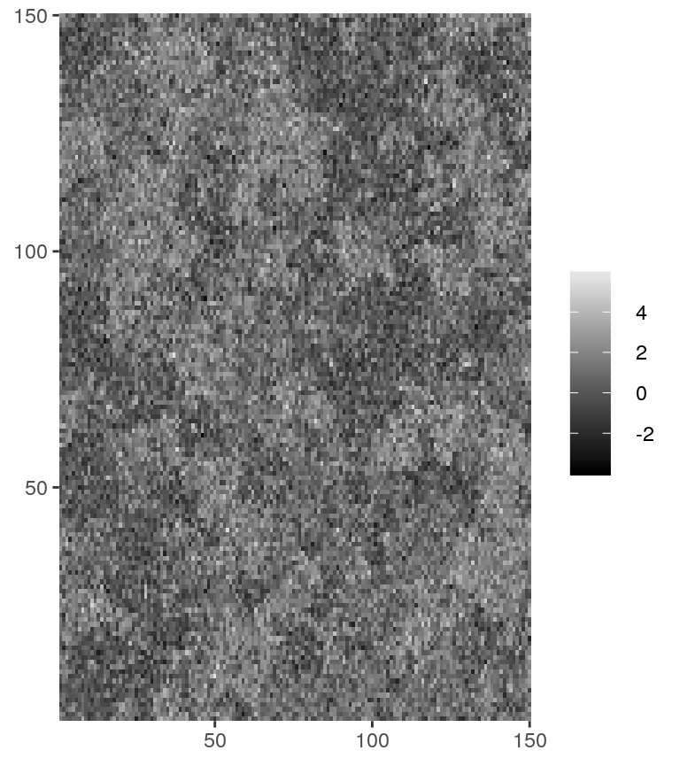
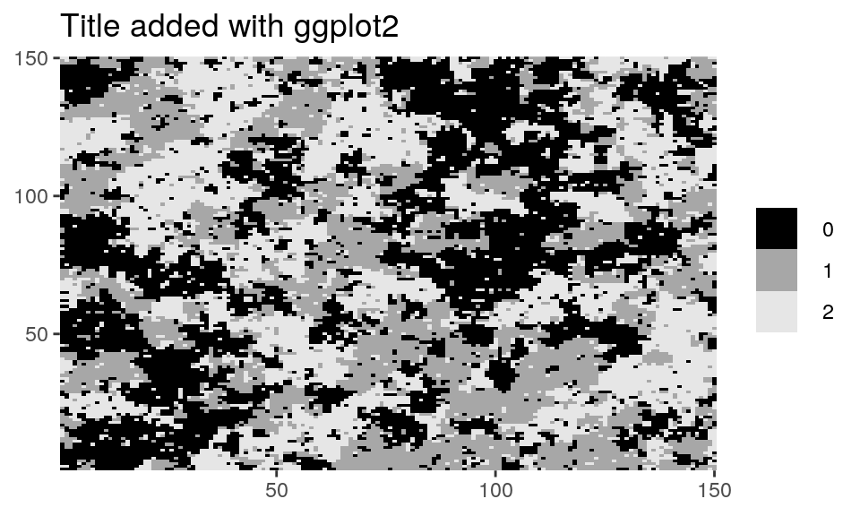
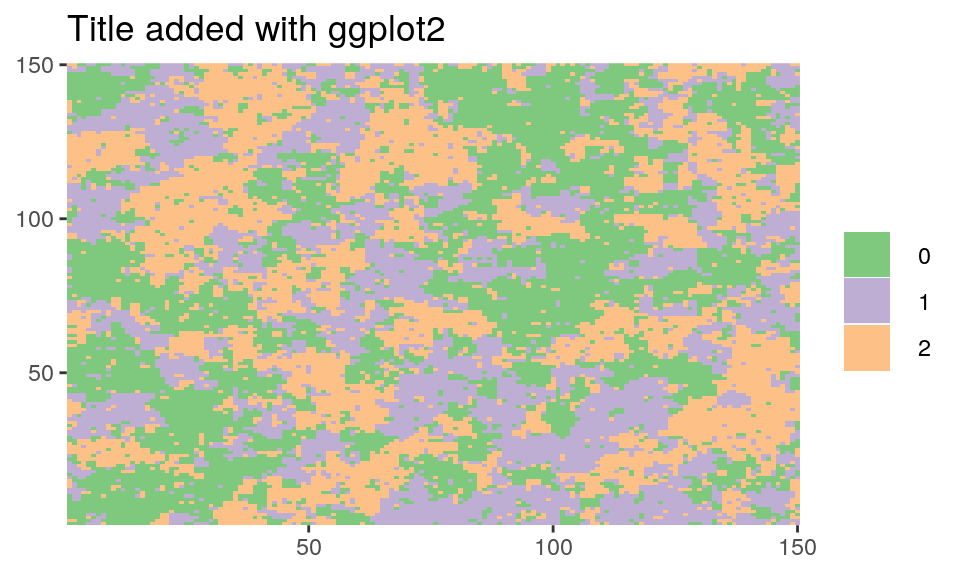
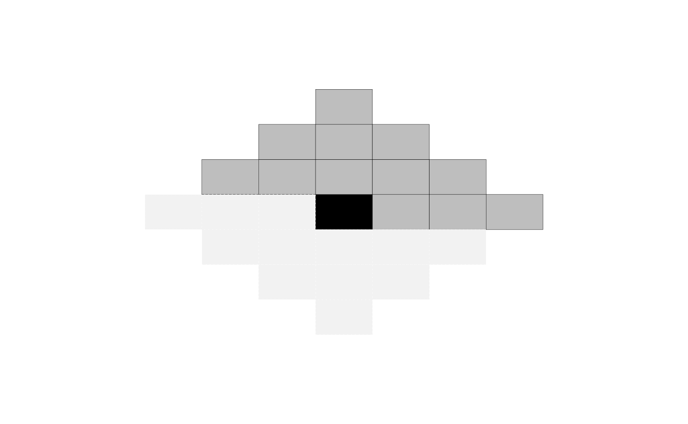

library(mrf2d)Markov Random Fields are probabilistic models used for modeling processes with local dependence. This dependence can be described by a graph \(\mathcal{G} = (\mathcal{V}, \mathcal{N})\), where \(\mathcal{V}\) is a set of vertices and \(\mathcal{N}\) a neighborhood system. A set of random variables \(\mathbf{Z} = \{Z_i, i \in \mathcal{V} \}\) is called a Markov Random Field with respect to the neighborhood system \(\mathcal{N}\) if
\[ P(Z_i = z_i | \{ Z_j, j \neq i \}) = P(Z_i| \{ Z_j, j \in \mathcal{N}_i \}), \] where \(\mathcal{N}_i\) denotes the neighbors of \(i\) according to \(\mathcal{N}\).
mrf2d provides tools for a specific, yet large, class of Markov random field models present in an image processing context: Two-dimensional lattices.
The Markov random field model considered in mrf2d has the following properties:

Under these assumptions, our probability distribution reduces to:
\[ P_\theta(\mathbf{Z} = \mathbf{z}) = \frac{1}{\zeta_\theta} \exp \left( \sum_{i \in \mathcal{L}} \sum_{j = i + r \in \mathcal{L}}^{r \in \mathcal{R}} \theta(z_i, z_j, r) \right), \]
or in terms of co-occurrence counts:
\[ P_\theta(\mathbf{Z} = \mathbf{z}) = \frac{1}{\zeta_\theta} \exp \left( \sum_{r \in \mathcal{R}} \sum_{a,b = 0}^C \theta(a,b,r) n(a,b,r) \right), \] where \(n(a,b,r) = \sum_{i \in \mathcal{L}} \mathbb{1}(z_i = a, z_{i+r} = b)\) is the count of co-occurrences of \(a\) and \(b\) in relative position \(r\).
mrf2d packagemrf2d has the goal to provide tools for analysis of Markov Random Fields on two-dimensional lattices, mainly, by using a simple yet efficient representation of the interaction structure, as well as parameters sets with different types of restrictions. It exports efficient implementations of the most common estimation methods and a sampling function, making it easy to implement new or specific algorithms with little effort taking advantage of the package’s API.
Computational efficiency is also an important feature of the package, having most of the computationally intensive functions written in Rcpp and object representations designed for high performance.
The package also provides plotting functions dplot() and cplot() that automatically convert matrix objects to appropriate data.frame structures and creates ggplot objects from it. These functions aim to provide easy to use methods of visualization but also take advantage of ggplot2’s grammar to modify aesthetics and create elegant and customizable visualizations of lattice data. dplot() should be used for discrete data while cplot() is suitable for continuous data.
# Z_potts is a matrix with an example of random field available in the package.
class(Z_potts)
#> [1] "matrix"
unique(as.vector(Z_potts))
#> [1] 0 1 2
dplot(Z_potts, legend = TRUE)

# Customizing plots with ggplot2's grammar
library(ggplot2)
dplot(Z_potts, legend = TRUE) + ggtitle("Title added with ggplot2")
dplot(Z_potts, legend = TRUE) + scale_fill_brewer(type = "qual") +
ggtitle("Title added with ggplot2")
mrfi class and parameter arraysThe stationary Markov Random Fields described are completely specified by the set of relative positions where interactions exists \(\mathcal{R}\) and the interaction parameters \(\theta(a,b,r)\).
In mrf2d, interaction structures \(\mathcal{R}\) are represented by objects of the S4 class mrfi, while interaction parameters are represented by simple 3-dimensional arrays, where theta[a,b,k] contains the value of \(\theta_{a,b,r}\) for the \(k\)-th relative position. As an example, in a nearest-neighbor structure (\(|\mathcal{R}| = 2\)) with \(C = 1\), where the interaction for equal values (\(a=b\)) is 0 and -0.99 for different values, the corresponding array would be
mrf2d:::vec_to_array(-0.99, "onepar", 1, 2)
#> , , 1
#>
#> 0 1
#> 0 0.00 -0.99
#> 1 -0.99 0.00
#>
#> , , 2
#>
#> 0 1
#> 0 0.00 -0.99
#> 1 -0.99 0.00Note that rows represents \(a\) values, columns are values of \(b\) values and slices are the relative positions in \(\mathcal{R}\) .
mrfi objectsmrfi objects can be created with the mrfi() function. It takes three parameters: max_norm, norm_type and positions. max_norm and norm_type combined define a region of included interactions. As example, if max_norm is 3 and norm_type is "1", the interaction structure will include relative positions \(r\) where \(|r_x| + |r_y| \leq 3\).
Note that opposite positions, e.g., \((1,0)\) and \((-1,0)\) are not both included, as the second one is always redundant for the model. A plot() method is available to visualize mrfi objects.
my_mrfi <- mrfi(max_norm = 3, norm_type = "1")
my_mrfi
#> 12 interacting positions.
#> rx ry
#> 1 0
#> 2 0
#> 3 0
#> -2 1
#> -1 1 ... and 7 more.
plot(my_mrfi)